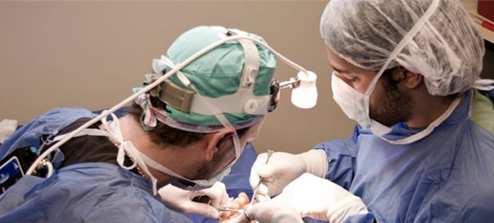

Fracturas y secuelas
- Fracturas de muñeca, metacarpianos y falanges
- Reconstrucción ósea por secuelas de accidentes
- Lesiones deportivas
Mendoza · Desde 1986
Diagnóstico, cirugía ambulatoria y rehabilitación para las afecciones de la mano, la muñeca, el codo y el hombro.

40 años en Mendoza


La clínica
Somos uno de los primeros centros del país dedicados a la mano y el miembro superior, y hoy una referencia en la región de Cuyo.
Trabajamos con cirugías ambulatorias y procedimientos mini-invasivos, artroscópicos y microquirúrgicos. Nuestros médicos son traumatólogos y miembros titulares de la Asociación Argentina de Cirugía de la Mano y Reconstructiva del Miembro Superior.
Procedimientos
Desde una fractura de muñeca hasta la rehabilitación posterior, con el mismo equipo.
Tratamiento del dolor agudo y crónico, rehabilitación y férulas a medida, en la misma clínica.
Staff médico
Turnos y cómo llegar
Escribinos por WhatsApp o llamanos en el horario de atención.